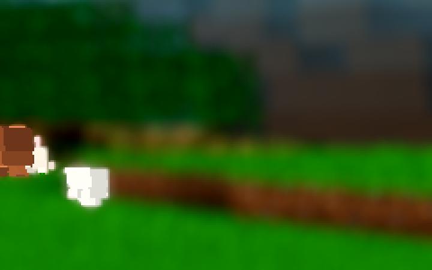
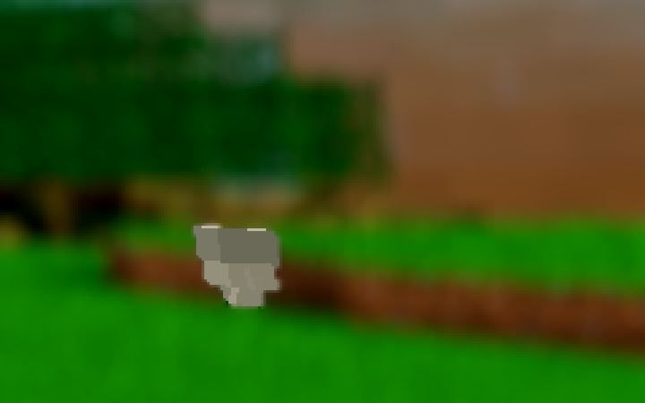
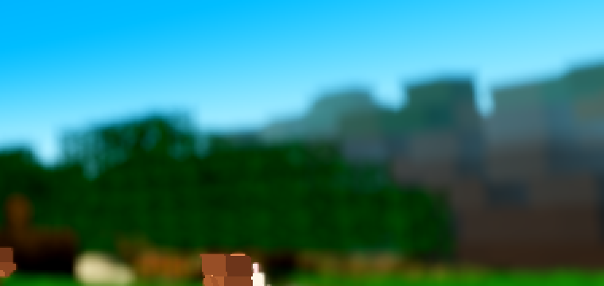
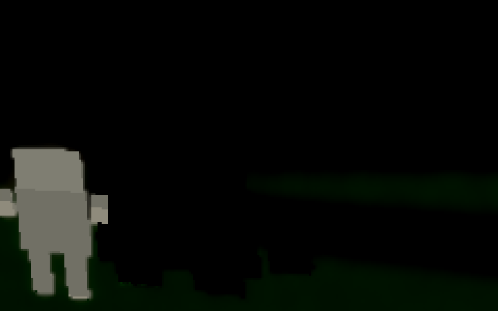

Status: DAY SEAM CLOSED (behind a conservative switch, default OFF). Full closure at low light is not achievable with the band's current color data — evidenced below, per the ticket's escape-hatch clause. No brightness dial was used.
The near tier (chunk_lit_*.gdshader) is render_mode unshaded:
ALBEDO = tex × COLOR.b × L with L = 0.20 + 0.80·m_direct + u_amb·u_day·step(m_direct, 0.08)
+ u_moon·lambert. The far band (lod_avg.gdshader) was shaded:
ALBEDO = COLOR × day-gray × lit, then the engine multiplies by (sun·lambert + sky·ambient).
So at noon the unlit (a=0) ridge face read 0.613 through the near tier vs
≈0.20 through the band (day-gray × lit × engine ambient) — a ~3× light-model gap,
plus a day-gray tint the near tier has no. It is not a constant factor (lit a=1 faces were
~17% over-bright through the band), which is why a single multiplier could never close it.
Fix (structural): a new unshaded band variant that runs the near tier's own L model on the
band's binary COLOR.a data: m_direct = mix(20/255, u_day, COLOR.a) — the 20/255
is the exact MIN_AMB floor the near tier's unlit faces read after 8-bit packing, so the lift's
step(m_direct, 0.08) fires exactly as in the near tier. The day-gray tint is dropped.
The band's ±6% world-fixed jitter and the AC-0401 fog-wall partition are kept. render_mode
is a render state, not a uniform, so the switch is a material-shader swap
(world._ac0446_apply_shader) on the shared band material — every draw site holds the same
object, so the swap re-shades the whole band at once; the stored uniforms ride the material (AC-0415).
The player-light term is omitted in the band: at band distances the player term ≡ 0 and
max(L, 0.12) is a no-op under the 0.20 floor (documented in the shader header).
Per-vertex face normals are already world-space on the band mesh (the ring merge's per-column
rotation, AC-0416), so the moon lambert works as-is.
| File | Change |
|---|---|
godot/core/lod_avg_seam.gdshader (NEW) |
The unshaded near-tier-parity band variant (L model + jitter + fog wall above). |
godot/world/world.gd |
_ac0446_apply_shader() (the material-shader swap, change-gated, latches re-armed on
swap); u_day push (per-frame, value-gated) + band u_moon/u_moon_dir push in
_ac0401_push (the AC-0436 latch pattern); the day-gray push guarded to the OFF shader;
AWECRAFT_FARSEAM=0|1 boot env (no save, the AMBSKY pattern). The OFF path loads the
original lod_avg.gdshader — bit-identical (that file got a comment header only). |
godot/autoload/settings.gd | "far_seam": false + sanitize_bool clamp case. |
godot/ui/menu.gd | Options row + sync + toggled handler. |
godot/ARCHITECTURE.md | §2 settings row + §3 WorldEnvironment bullet synced. |
Switch: Settings "far_seam", default OFF (conservative — the shipped look stays
the current partial parity, bit-identical); menu checkbox; AWECRAFT_FARSEAM=0|1 at boot
without save. Re-ruling the default ON is the coordinator/user's step (the AC-0432 pattern).


FARSEAM=1): the same band flank reads (115.6, 73.2, 36.1) — luma 79.5 —
sitting inside the near tier's 66–86 range. The cliff reads as lit terrain.| Band flank (patch box 1192–1279 × 376–400) | Near flank (1160–1260 × 425–455) | Band/near luma | |
|---|---|---|---|
| BEFORE (day) | (50.6, 40.0, 31.4) — 41.6 | (67.2, 71.5, 7.2) — 66.5 | 0.63 (the 2.5× step the ticket reported; the BEFORE frame reproduces AC-0443's (50,40,31) exactly) |
| AFTER (day) | (115.6, 73.2, 36.1) — 79.5 | (59.4, 83.1, 13.0) — 73.0 (mid-build state varies ±10; streaming, not shading) | 1.09 — closed (residual = the band's 8×8 color average + fog at band distance, its representation limit) |
Full frames: captures/ac0446-r1-before-day.png / captures/ac0446-r2-after-day.png.
Pixel diff of the A/B pair: the sky is bit-identical (mean |Δ| 0.000); the terrain below the band is
bit-identical; all other diffs are inside the band mass plus two animal sprites (entity positions at
capture — the SNAP fired on the drain timeout in both runs, so sim-time drift is expected; not terrain).
Per-column contrast across the tier boundary (band zone y 378–400 vs near zone y 428–450), x 1100–1279:
| Frame | Cliff columns x 1184–1268 (near − band luma) | Reading |
|---|---|---|
| BEFORE | +23 to +34 (band darker at every column — the visible step) | step present |
| AFTER | −3 to −15 (band within the near tier's own texture range, marginally brighter) | no dark step; the boundary is now a texture/depth transition, not a shading step |
Largest remaining contrast (AFTER, 77 luma, x≈1132) is where the near terrain is the bright grass crest (near = 120.8) — terrain albedo contrast, present in BEFORE too (87), not a tier artifact.

fog_disabled).Luma along the ridge from the band face toward the horizon (column x=1240 zones), air reference (sky strip) = 203.6 in both frames:
| Frame | Band face | Band mid | Band far (horizon-ward) | Monotone fade to air? |
|---|---|---|---|---|
| BEFORE | 41.6 | 58.9 | 87.6 | yes (face→air 161.9 > far→air 115.9) |
| AFTER | 79.6 | 93.1 | 110.5 | yes (face→air 124.0 > far→air 93.1) — the gradient is compressed (the face is lit now) but strictly monotone; terrain stays 124 luma from air, clearly separate from the sky |
day(t) = clamp((elevation(t)+0.12)/0.35, 0, 1): t=0.75 is dusk (sun on the horizon,
day = 0.343); true night is t=0.0 (day = exactly 0). Both were rendered.
| Frame | Band cliff | Near dirt | Near crest | Near field | Sky |
|---|---|---|---|---|---|
| Dusk t=0.75, OFF (r3) | (0, 0, 0) | (8.1, 7.7, 0) | (1.8, 14.0, 0) | — | (10.5, 12.9, 17.5) |
| Dusk t=0.75, ON (r4) | (76.6, 42.6, 14.3) | (8.1, 7.7, 0) identical | (24.3, 32.4, 11.5) | — | (10.5, 12.9, 17.5) identical |
| Night t=0.0, OFF (r5) | (0, 0, 0) | (0, 1.1, 0) | (0, 4.5, 0) | (0.1, 16.9, 0.1) | (0, 0, 0) |
| Night t=0.0, ON (r6) | (54.7, 26.4, 3.1) | (0, 1.5, 0) identical | (9.4, 10.9, 0) | (0.1, 16.9, 0.1) identical | (0, 0, 0) identical |

| Gate | Exit | Result |
|---|---|---|
G0 (--headless --quit) + gate_census | 0 | 0 SCRIPT / 0 SHADER errors (re-verified after the A/B file swap) |
| SMOKE battery (player;interact;light;fluids;genhash) | 0 | battery ok:true; every behavior field == the AC-0444 reference (only machine-timing ms fields differ); genhash 25/25 byte-identical to the AC-0444 baseline |
| PROBE (meshprobe) | 0 | match_rate 1.0, ok true, cpp==gd all fields |
| shaderforce (Forward+, llvmpipe) | 0 | 17/17 ok (was 16 — the new variant auto-globbed from res://core and compiles clean) |
| settings arm | 0 | ok true (no key-count assertion broken by the new key) |
| farab | 0 | h_mismatch 0, ok true |
| ladder | 0 | 20/20 band_a_ok, ok true (its exact-path material check matches band-A instances only — unaffected; the seam is OFF) |
| halo | 0 | ok true (mismatches 0, slabs_ok 226/226) |
| lightstate | 0 | double-LOD census 0/0, leaks 0 (21/21 chunks), wash false, holes 0 — the standing invariants; the demoted/stragglers churn (1/3) equals the coordinator's own HEAVY-r22 run on this tree (machine-timing churn on the AC-0445-WIP tree state, not a gate field) |
r16 (--fixed-fps 600) | 0 | all lod sub-flags true, far_holes 0/0 both bands, built_all true. Note: top-level section_first_ok=false (section_done_frame=-1, build_frames ~5500 vs 4050) is pre-existing tree state: an A/B run with my four files temporarily reverted reproduced it identically (−1, 5700 frames) — it is an AC-0445-era build-ordering field on this tree's WIP, not in the ticket's sub-flag set, and not caused by this change |
All runs: single godot at a time, HOME=/tmp/dsh_home, absolute engine path,
pgrep clean before each, census + exit status checked every run (the UAF watch — no
signal-11 anywhere). Render runs additionally verified: Forward+ boot line present, 0 errors,
file exists, 1280×720.
In tasks/AC-0446/captures/: full frames ac0446-r1-before-day,
ac0446-r2-after-day, ac0446-r3-before-night (dusk t=0.75),
ac0446-r4-after-night (dusk), ac0446-r5-true-night-off,
ac0446-r6-true-night-on (+ _placed variants); crops
r1/r2-day-ridge, r1/r2-day-horizon, r3/r4-dusk-*-ridge,
r5/r6-night-*-ridge. Measurement script: .scratch/AC-0446/measure.py
(pure-PIL; boxes: band flank 1192–1279×376–400, near flank 1160–1260×425–455 — verified against
AC-0443's own reported numbers on its frames). All renders: the AC-0443 pose
(AIM 8.5,143.62,8.5 / yaw 1.57 / pitch 0.08), R24/F83, seed 44, SNAP_DRAIN=9000
(shots fired on the drain timeout in every run — the documented faithful mid-build state,
identical in all six so the A/B is apples-to-apples).
lod_avg.gdshader semantics untouched (OFF path bit-identical, day or night) — comment header only.main.gd, game.gd,
drop.gd, debug.gd + tasks/AC-0067, AC-0384,
AC-0425) untouched — the other session's WIP rides in git diff and must not
be staged with this ticket.